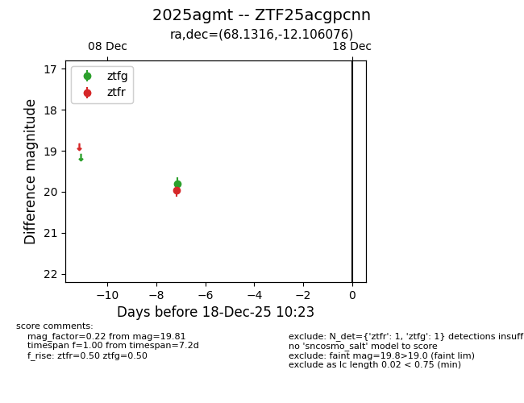
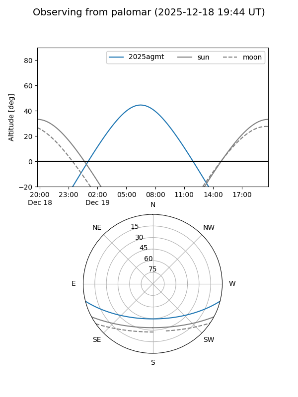

2025agmt
Target 2025agmt at 2025-12-18 11:18
Aliases and brokers:
FINK: fink-portal.org/ZTF25acgpcnn
Lasair: lasair-ztf.lsst.ac.uk/objects/ZTF25acgpcnn
ALeRCE: alerce.online/object/ZTF25acgpcnn
TNS: wis-tns.org/object/2025agmt
YSE: ziggy.ucolick.org/yse/transient_detail/2025agmt
alt names
ZTF25acgpcnn (ztf,fink_ztf)
2025agmt (tns,yse)
Coordinates:
equatorial (ra, dec) = 68.1316,-12.10608
equatorial (HMS+DMS) = 04:32:31.58,-12:06:21.87
galactic (l, b) = (208.1420,-36.25378)
Photometry
last ztfg=19.81, ztfr=19.97
1 ztfg, 1 ztfr detections
Lightcurve

Visibility


Additional plots